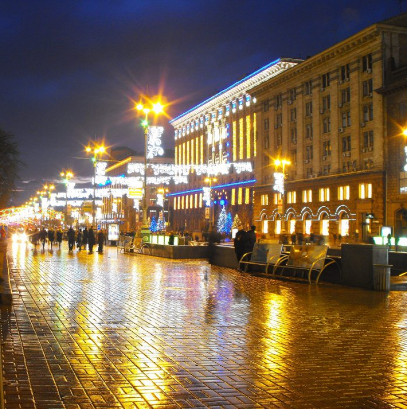

Історія заснування столиці України Києва здавна оповита легендами. Відомо, що офіційно місто заснували в 482 році, проте перші невеликі поселення на території сучасної Київщини були ще 15-20 тисяч років тому.
В одній з найвідоміших на сьогодні легенд, яка описана у "Повісті минулих літ" розповідається, що засновниками Києва є три брати з слов'янського племені полян – Кий, Щек і Хорив та їхня сестра Либідь. Спочатку кожен брат заснував своє укріплення на київських горах. Проте згідно з тогочасним патріархальним ладом, саме з найстаршим братом пов'язували усі досягнення. Тому князі вирішили об'єднатися: місто на дніпровських пагорбах назвали в честь найстаршого брата – Кия, а іменами інших задля вшанування назвали гори та ріку, що протікала поблизу.
У 1923 році Хрещатик був перейменований у вулицю Вацлава Воровського («радянський» дипломат, який був убитий в Лозанні емігрантом-білогвардійцем), але в липні 1937-го вулиці повернули історичну назву Хрещатик. Чому?
Цікаво, що навіть за 15 років «радянської» влади назва не прижилася, і вулиці повернули її колишню назву, через те що кияни продовжували називати її Хрещатиком. В період гітлерівської окупації Хрещатик назвали «Фон Ейхгорнштрассе» - за прізвищем кайзеровского (німецького) головнокомандувача, убитого в Києві в 1918 році. Але в побуті вулицю продовжували називати Хрещатик.
Одним з найстаріших назв місцевості Хрещатика було Перевесище - те, що сталося саме від «переважування» мереж для лову звірів. Хрещатик є найкоротшою (1,2 км) і одночасно найширшю головною вулицею в Європі (ширина 75 м, в деяких місцях досягає 100 м). Цікаво, що тільки в самому кінці 18-го століття на Хрещатику стали з'являтися перші житлові будинки. Це більше ніж через 1000 років після заснування Києва. І це при тому, що в той час з Подолу Київ тягнувся аж до Куренівки, де були козачі курені.

Пісня про Хрещатик
Національний музей історії України
Одне з найбільших історичних зібрань країни. Понад 800 тисяч унікальних пам'яток. Чудові нумізматичні зібрання, археологічні дивини та етнографічні колекції. Приголомшливі зразки холодної та вогнепальної зброї, посуду, рідкісних книг, козацьких документів, картин. Це, безсумнівно, один з кращих музеїв Києва. Національний музей пропонує відвідувачам ознайомитися з періодами історії Київської Русі, тут експозиції, присвячені праці рибалок, теслярів, ковалів та інших ремісників. Окрему увагу приділено представленим експонатам, що оповідають про історію культури, побуту, військової справи та повсякденне життя людей давніх часів. В інших залах музею зібрана колекція предметів старовини, що розповідає про життя селян, знаті і жителів міст. Тут поєднуються експонати образотворчого мистецтва, які доповнюють галереї, наповнені тематичним змістом. Варто виділити експозицію «Катерининське століття» і телеграфний апарат системи Юза, який являє собою передову техніку кінця 19 століття. У музеї можна побачити унікальні меблі, виконані у стилі вікторіанської епохи.Вони представляють колекцію експозиції дворянського будинку 19 століття, а також багато інших експонатів, що заслуговують уваги і розповідають про історію країни в різні періоди часу.
Сторінка музею у facebook
Культова страва Київа
У котлети по-київськи безліч попередників. По-перше, французькі страви по типу «марешаль» – різноманітні котлети в паніровці, фаршировані трюфелем чи іншими делікатесами. По-друге, котлета де-воляй – з курячої грудки, в яку вставляли кістку. Цю котлету також смажили в паніруванні, а фарширували кнелями чи кульками з іншого виду м’яса. Дещо схожими були і пожарські, і новомихайлівські котлети, які готували зазвичай з каплунів. І це лише на території Європи.
Дещо пізніше, в 30-і роки 20 століття, подібна страва поширилася в США – йшлося про курячу грудку, фаршировану вершковим маслом – страву, що ніби мала київське коріння. Все ж «зійшлося» в 1947 році, коли офіційно було вперше приготовано справжню котлету по-київськи. Вже за 10 років вона з’явиться в меню всіх ресторанів при готелях «Інтурист», а згодом розповсюдиться світом і стане найбільш впізнаваною київською стравою.
Рецепт котлети по-київськи